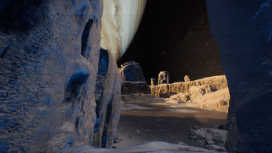
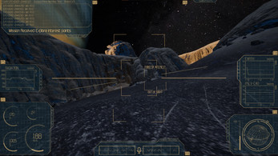
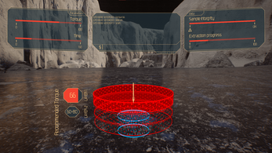

Science as a Design Document
Inspiration IV is a space exploration adventure set on Europa, one of Jupiter's moons and the most promising location in our solar system for finding extraterrestrial life. The game turns real astrophysics and astrobiology research into interactive mechanics, environmental puzzles, and traversal challenges.
Rather than treat the sci-fi setting as pure aesthetics, I used NASA and ESA data on Europa's surface conditions, specifically the ice shell, tidal forces, subsurface ocean, and radiation environment, as the primary source for what the player can do, what threatens them, and what they're trying to discover.
My responsibilities covered the full level design pipeline: research, blocking, scripting, and tutorial design, all in Unreal Engine 5.
What I Designed & Built
Every design decision in Inspiration IV starts with a question: what would this actually feel like? Here's how that question shaped each area of my contribution.
Before touching Unreal, I spent significant time researching Europa through NASA mission reports, ESA briefings, and peer-reviewed astrophysics papers. The goal: find the aspects of Europa's environment that could become compelling design constraints rather than just backdrop.
Ice Shell Dynamics
Europa's unstable ice crust informed traversal: fractures, pressure ridges, and collapse zones as natural level hazards.
Subsurface Ocean
The liquid water layer below the ice became the game's central mystery, driving exploration motivation and narrative structure.
Radiation Exposure
Jupiter's radiation belt creates a survival pressure mechanic. Players must manage exposure time on the surface vs. time in shielded zones.
- Mapped research findings to design opportunities: each Europa characteristic became either a mechanic, a hazard, or a puzzle hook
- Documented a science-to-design translation brief used to align the team on which real phenomena we were interpreting and how
- Maintained research fidelity without sacrificing fun. Every mechanic has a real scientific basis, but the tuning prioritises player experience
I built the Europa level from the ground up in Unreal Engine 5, starting from a paper sketch and finishing with a fully blocked and scripted space.
- Sketched the level macro structure on paper first, identifying the key beats, pacing curve, and science moments the player needed to experience
- Built the initial blockout in UE5 using BSP and geometry brushes, testing player movement, sight lines, and pacing before committing to visual dressing
- Designed the traversal flow around Europa's specific geography: pressure ridges as natural barriers, ice plains as exploration areas, crevasses as routing puzzles
- Scripted key level events using UE5 Blueprints: environmental triggers, hazard zones, and atmospheric moments tied to the subsurface ocean mystery
- Iterated on the layout through multiple playtests, adjusting pacing, hazard density, and discovery rhythm based on observer feedback
Europa is not a setting players already know. The tutorial had to teach both the mechanics and the world at the same time, without breaking immersion or dumbing down the science that made the game interesting in the first place.
- Designed a contextual tutorial sequence where every mechanic is introduced through a naturally-occurring scenario rather than a UI popup. The environment teaches, not the HUD
- Structured the opening section to deliver low-stakes science moments first, like touching the ice, seeing the ridges, checking the radiation meter, before high-stakes hazards appear
- Built fail-safe learning zones early in the level, areas where players can encounter a hazard and recover, learning the rule without being punished by it
- Tested the tutorial sequence with players who had zero context, iterating on each pain point until the experience felt discoverable rather than instructed
Rather than generic puzzle patterns, every puzzle in Inspiration IV is derived from a real property of Europa's environment, making the puzzles feel like natural extensions of the world rather than arbitrary obstacles.
- Tidal stress puzzles: the player must time movements through areas affected by Jupiter's tidal forces, using the periodic cracking of the ice as both hazard and traversal tool
- Thermal vent navigation: geothermal activity near the ocean creates heat gradients the player must route through, balancing warmth (survival) against dangerous proximity
- Ice transparency puzzles: Europa's ice in some regions is clear enough to see below; players must read the ocean below to understand what's safe to stand on above
- Each puzzle was verified against the science. If a mechanic required Europa to behave in a way that contradicts known data, we redesigned the puzzle rather than bend the research
Screenshots & Level Design



